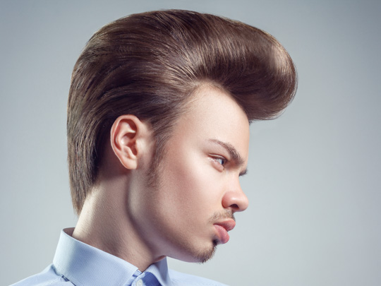

Markos
A Ascensão do Pompadoue

Origem
França, Seculo XVIII / Rock and Roll, Anos 50.
História
Apesar de ser um ícone da rebeldia masculina, o Pompadour nasceu na realeza francesa do século
XVIII, popularizado pela Madame de Pompadour, amante do Rei Luís XV. Originalmente um penteado
feminino, ele foi resgatado e reinventado nos anos 50, tornando-se o símbolo da cultura Rock and
Roll. Ícones como Elvis Presley e James Dean adotaram o visual, com seu topo volumoso e laterais
baixas, transformando-o em um estandarte de atitude. Hoje, ele é frequentemente combinado com um
fade (degradê) afiado nas laterais, unindo o clássico e o moderno em um só corte.
Curiosidades
O nome é uma homenagem direta a Jeanne-Antoinette Poisson, a Madame de Pompadour.
Nos anos 50, o penteado era associado à subcultura dos "Greasers", que usavam
brilhantina (pomade) para modelar o cabelo.
Existem dezenas de variações, como o "undercut pompadour", onde as laterais são raspadas
em vez de apenas aparadas.
Artistas modernos como Bruno Mars e David Beckham já foram grandes adeptos do estilo,
provando sua atemporalidade.
Dicas do Barbeiro
O produto certo é tudo: Para um Pompadour clássico com brilho, use uma pomada à base de
óleo. Para um visual mais moderno e fosco (matte), opte por uma à base de água ou uma
cera de alta fixação.
A importância do secador: O volume no topo é o segredo do corte. Use um secador de
cabelo e uma escova redonda para levantar a raiz antes de aplicar o produto finalizador.
Converse com seu barbeiro: A proporção do Pompadour deve se adequar ao formato do seu
rosto. Um profissional saberá equilibrar a altura do topete com o degradê das laterais.
Produtos Recomendados
Pomada de Fixação Forte (Matte ou Brilho)
Spray Fixador (para finalizar)
Escova Redonda de Cerdas Mistas
Pente Fino (para detalhes)